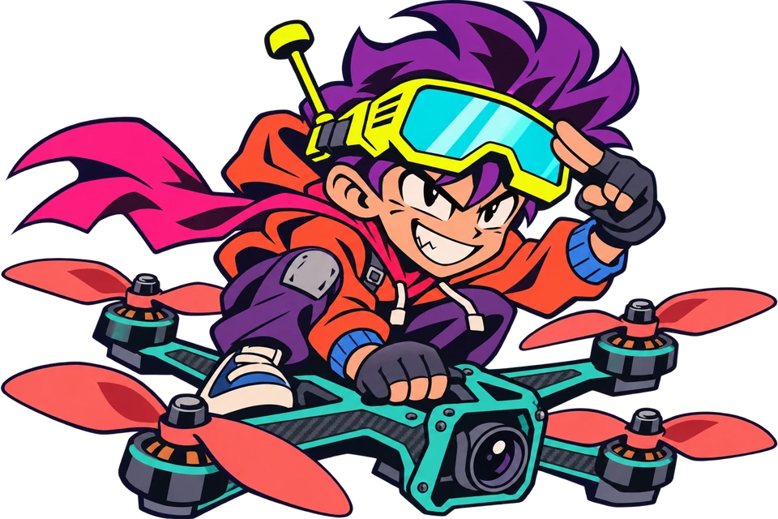
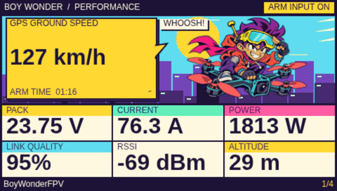

Squadding Quads FPV Dashboard / Theme 09
BoyWonder!
For the younger pilots, BoyWonderFPV has designed this special cartoon-themed dashboard for you to use.

Performance · design preview

Tap the four tabs along the bottom of the display to change pages.
Preview settings Screen, units & simulated aircraft
Demo history stays in this browser. It does not connect to your radio or its SD card.
EDGETX WIDGET
Squadding Quads FPV Dashboard
Colour EdgeTX 2.11+ / Theme 9

ON THE RADIO
Fit the widget.
The main target is a 480 × 272 landscape display. Larger zones reflow; small or portrait zones use a compact layout.
Four tabs on every theme. Long-press SQDash and choose Full screen. Tap the bottom of the display to jump straight to an instrument page. Logbook is available on the ground.
- Copy the widget.Extract the ZIP and copy its WIDGETS folder to the SD card root, including both
main.luaandpilot.pngin/WIDGETS/SQDash/. Restart EdgeTX and add SQDash to a large widget zone. - Choose Boy Wonder.Set Theme = 9 on SQDash. Choose Layout 1–4 and your speed and altitude units.
- Match your arm source.Set ArmSrc to the dedicated arm AUX channel or matching two-position switch. Set ArmHigh to match its direction. Verify both positions with propellers removed.
- Verify telemetry.Discover sensors and compare values with your flight controller. Set Cells to your verified pack count. Turn on LogSD for automatic SD saves. New widgets default to on. On a v1.8.2 upgrade, check the existing setting.
- Review a flight.In full-screen widget view, press Enter or tap the disarm summary to open Logbook, then Enter or tap again to review. Use Next and Previous to browse the eight most recent flights. Re-arming returns to the live display.
Telemetry, logging & validation notes
Colour EdgeTX 2.11+ target (eight widget settings); older radios can use the archived v1.3. Speed and altitude require compatible sensors and units. Statistics are sampled, not blackbox maxima; missing and stale readings are excluded, data gaps can cause missed extrema. Arm status follows the configured radio source, not confirmed FC arming. Reports stay in memory until re-arm, settings changes or widget reload. Session records survive re-arm but not settings changes or reload; saved aircraft records survive radio restart. Power is estimated from sampled voltage × current; the speed average is a sample mean, not a distance/time calculation. The trace contains up to 36 approximately one-second samples. No flight controls, model writes or sounds. With LogSD enabled, the widget appends one CSV row per observed disarm to /LOGS/SQD_<model filename>.csv. It loads incrementally while disarmed; the latest eight rows and aircraft records appear in Logbook. Archive the CSV at the 256 KiB limit. Missing or partial samples are marked; A quick re-arm keeps pending saves queued until the next disarm. SD errors are shown on the report. With LogSD off, the eight most recent flights are available for the current session. Model filename reuse shares history. Battery drop is measured from the first armed voltage, not a direct internal-resistance measurement. This is an experimental field preview. Physical-radio validation is pending; test disarmed and remove if radio performance suffers.
The browser executes the downloadable widget’s Lua drawing code with synthetic state. Browser fonts and LCD rendering are approximations; it is not an EdgeTX firmware simulator. The skyline, pilot movement and telemetry panels use the radio renderer.